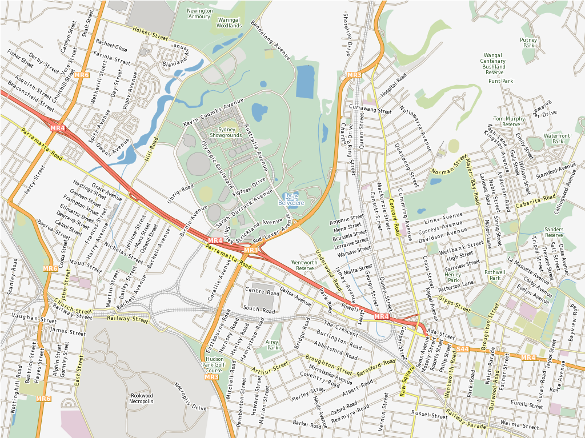

MapServer¶
Servizi Web¶
MapServer è un Open Source motore di rendering di dati geografici scritto in C. Oltre a sfogliare i dati GIS, MapServer permette di creare «mappe di immagini geografiche», cioè mappe che possono indirizzare gli utenti a contenuti web. Per esempio, il Minnesota DNR Recreation Compass fornisce agli utenti più di 10.000 pagine web, rapporti e mappe attraverso una singola applicazione. La stessa applicazione serve come «motore di mappe» per altre parti del sito, fornendo un contesto spaziale dove necessario.
MapServer fu originalmente sviluppato dal progetto ForNet dell’Università del Minnesota (UMN) in cooperazione con la NASA, e il Minnesota Department of Natural Resources (MNDNR). Dopo fu mantenuto dal progetto TerraSIP, un progetto sponsorizzato dalla NASA, tra la UMN e una corsorzio di enti interessati alla gestione del territorio.
MapServer è ora un progetto di OSGeo, ed è mantenuto da un numero crescente di sviluppatori (quasi 20) da tutto il mondo. È supportato da un diverso gruppo di organizzazioni che finanziano miglioramenti e manutenzione, ed è amministrato all’interno di OSGeo dal MapServer Project Steering Committee composto da sviluppatori e altri collaboratori.
{kind=link}
Caratteristiche principali¶
Risultati cartografici avanzati
Disegno di elementi in funzione della scala ed esecuzione dell’applicazione
Etichettature degli elementi includendo mediazione delle collisioni delle etichette
Supporto dei font TrueType per etichettatura e simbologia
Elemente della mappa (barra della scala, mappa di referenza, e legenda)
Mappatura tematica usando classi basato su espressioni logiche o regolari
Supporto per motori di rendering tramite driver AGG, Cairo, GD, OpenGL e altri
Dotazione speciale per la produzione di tile
Layer per maschera
Posizionamento preciso dei simboli
Multi simbologia/etichette complesse
Campi Vettoriali
Offset del leader dell’etichetta
Simbologia SVG
Supporto per font multipli
Mappe di concentrazione dinamiche
Supporto a UTF Grid
Compositing dei layer
Supporto a interrogazioni spaziali complesse
Identificare gli elementi attraverso attributi, punti, bounding box o geometria in uno o più layers
Supporto per interrogazioni su raster
Output completamente personalizzabile tramite template
Generazione di output su interrogazioni basate su OGR
Supporto per scripting popolari e ambienti di sviluppo
CGI/FastCGI
PHP, Python, Perl, Ruby, Java, e .NET
Supporto multi piattaforma
Linux, Windows, Mac OS X, Solaris, e altri
Moltissimi formati di dati raster e vettoriali
Supporto nativo per ESRI shapefiles, PostGIS, ESRI ArcSDE and Oracle Spatial
Molti altri formati tramite GDAL e OGR
Supporto per le proiezione delle mappe
Riproiezione di mappe al volo con circa 1000 delle proiezioni attraverso la libreria Proj.4
Standard implementati¶
Supporto di numerosi standard Open Geospatial Consortium (OGC)
Web Map Service (WMS) (client/server)
Web Feature Service (WFS) (non-transazionale, client/server)
OM
conforme al INSPIRE View Service
Demo¶
Documentazione¶
Dettagli¶
Sito web: https://mapserver.org
Licenza: licenze stile MIT
Versione Software: 7.6.2
Piattaforme Supportate: Windows, Linux, Mac
Interfacce API: C, PHP, Python, Perl, Ruby, Java, and .NET
Supporto: https://mapserver.org/community/